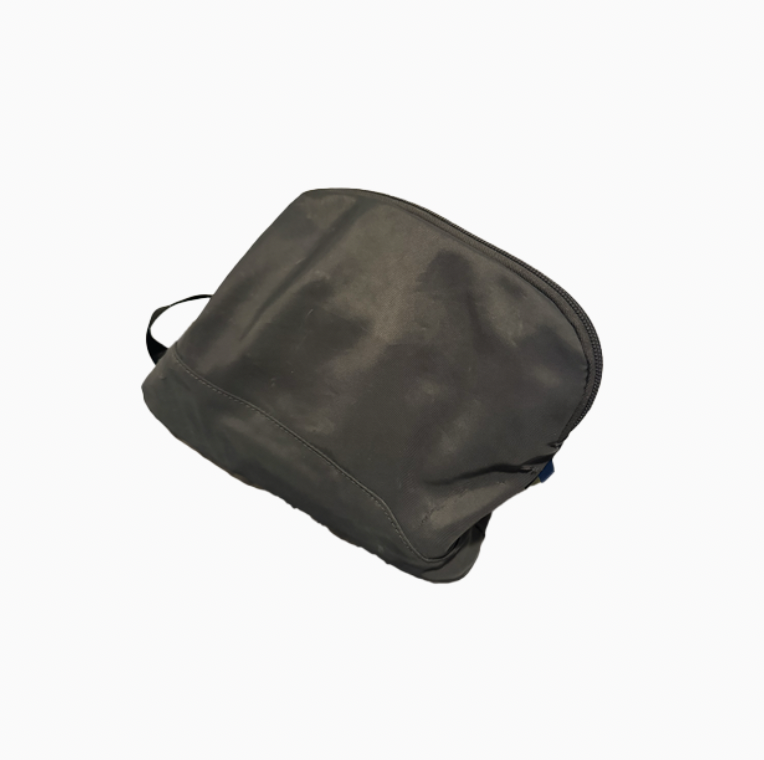

Toiletry Bag

Travel Solid Zipper Toiletry Pouch - Open Story™ Gray
Size
8*10*3 inches
Timeline
Owned less than a year
Released Unknown
Description
A gray toiletry bag with a simple design.
Memories
Might have the least memories among the fourteen objects. There is not a lot of interaction done with the bag, or maybe no other than just opening and closing it, this bag doesn't even expose but quietly carries few toiletries. And I did not even used to carry toiletries in a bag for a long time anyhow. With these objects with less memories, I usually think I should try making some. But this one, I do not know if I could grasp a concept of its significance.
Dreams
If I could care more about myself routinally, this vessel will hold more things, then I would have more appreciated and weighted this bag more than a container of toiletries. In other words, it really does depend on my engagement.
Wonders
How many times have I performed the same routines without ever really thinking about them?